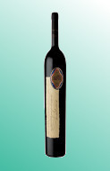

Escolha um vinho
-

- 
Almaviva
O Almaviva é a perfeita fusão entre os conhecimentos bordaleses da família Rothschild e os conhecimentos do solo, videiras e região da Concha Y Toro. Estes dois produtores se fundiram neste projeto único para criar o Almaviva, vinho produzido no Chile com técnicas Francesas. Desde o início do projeto a concepção foi usar blends típicos bordaleses da margem esquerda, região onde a família Rothschild tem suas propriedades. A uva Cabernet Sauvignon é a estrela principal, tendo como coadjuvantes Cabernet Franc, Carmenere. O blend é feito usando as mesmas técnicas de vinificação de Bordeaux, ou seja, nem todas uvas são usadas a cada safra. Isto é feito com objetivo de arredondar o vinho, trazendo mais elegância e deixando mais macio e redondo, então a cada safra julgam quais uvas se encaixarão melhor e usam blends diferentes, tendo sempre como base a Cabernet Sauvignon, exatamente como a família Rothschild faz nos vinhos em Bordeaux. Vinho de cor vermelho profundo, rubi intenso e com tons de roxo. Aromas de cassis, frutas pretas e violetas. Notas de baunilha, cacau, alcaçuz e especiarias.